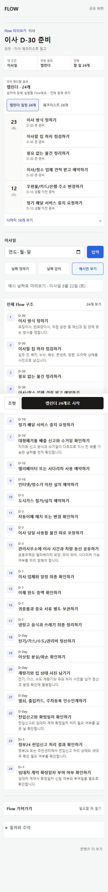

독립 검토 · P33 DRAFT PR #156 · commit b4ba62e · 2026-07-25
alias·저장 identity·downstream 24개 정합은 근거로 확인된다. 남은 문제는 URL 진입의 미리보기·파일, 사본 선택에 없는 ‘따로 유지’, 발견 표면의 legacy 잔존이다. 앱 코드를 수정하지 않았고 PR을 merge하지 않았다. 실제 관찰 사용자는 0명이며 자동화·스크린샷·소스 판독은 사용자 검증이 아니다.
P33은 비파괴 계약(삭제 0 · 자동 병합 0 · 복구 가능 · malformed fallback)과 alias→canonical 24개 정합을 실제로 구현했다. 그러나 URL 진입만 legacy 5개 세대의 미리보기와 파일을 그대로 내보내고, 사본 선택에는 ‘따로 유지’가 없어 복구 시 결정이 반복 요구된다. 범위가 좁은 국소 수정이므로 block이 아니라 publish 전 bounded fix다.
이 판정은 PR의 QA 표(pass 55+587 / 6 / 320 / 18)를 복사한 것이 아니다. 나는 명령을 실행하지 않았고, PR의 assertion을 읽어서 무엇이 고정됐고 무엇이 고정되지 않았는지 판정했다. 실행 결과의 진위는 CI 로그가 답할 문제다.
요청된 8개 질문에 각각 독립 판정과 근거를 붙였다.
Severity · route/viewport · 재현 · 기대↔실제 · 사용자 영향 · evidenceKind · 수정 제안 · 필요한 marker/screenshot. 위 칩으로 심각도와 관점을 걸러 볼 수 있다.
Route/viewport · /flows URL lookup 결과 → 저장 전 미리보기 → 파일 받기 · 390×844, 1024×768
기대 URL 진입도 canonical 24개의 제목·항목을 보여주고, 받는 파일이 저장 결과와 같다.
실제 미리보기는 legacy aggregate 3행, markdown heading은 # 원룸 이사 D-30 일정 지도. myFlow 줄만 ‘전체 이사 준비 24개’. canonical 경로의 저장 package가 미리보기 문장을 그대로 4줄 파일로 내보낸다. 같은 경로에서 저장 전 행 선택(includedStepIds)도 무시된다 — 그 분기는 legacy map 경로에만 구현돼 있다.
붙여넣은 사용자는 3행짜리 다른 Flow를 보고 결정하고, 받은 파일과 저장된 24개 Flow가 서로 다른 문서가 된다. ‘어느 진입점에서도 같은 결과’라는 P33의 핵심 약속이 이 한 지점에서 깨진다.
수정 lookup preview와 markdown/ICS를 canonical snapshot projection에서 파생시키고 제목은 registry title을 쓴다. legacy 문구 상수는 legacy variant 전용으로만 남긴다. canonical 경로에도 행 선택을 연결한다.
evidenceKind current_source · marker urlLookupPreviewItemCount === canonicalItemCount, urlLookupPreviewTitle === canonicalTitle, urlLookupMarkdownRowCount === 24 · screenshot url-lookup-canonical-preview-390, url-lookup-export-file-1024
Route/viewport · /my?view=flows · 390×844, 1024×768
기대 이어서 실행 / 하나로 합치기 / 따로 유지 3지선다, ‘따로 유지’ 선택 시 두 사본이 라벨로 구분된 채 공존하고 패널이 끝난다.
실제 상태 계약이 none|single|needs_choice|resolved뿐이고 resolved 조건이 ‘나머지 전부 보관’이다. 두 사본을 동시에 활성으로 두는 상태가 없고, 복구하면 needs_choice로 되돌아가 패널이 재등장한다. 이 동작은 unit test로 고정돼 있다.
진행 중인 5개 이사와 다음 이사용 24개를 병행하려면 한쪽을 보관해야 하고, 복구하면 매 방문마다 같은 결정을 다시 요구받는다. 반복 요구는 ‘합치기가 안전한가’라는 불안을 키워 결정을 회피하게 만든다.
수정 kept_separate 결정 상태 추가(두 사본 활성 + 행마다 ‘전체 24개’ / ‘간단 5개’ 라벨), 결정 후 패널 재노출 금지, 복구는 ‘선택 재요구’가 아니라 ‘따로 유지로 전환’으로 해석.
evidenceKind current_source, pr_test_contract · marker keptSeparateDecisionPersistsAfterRestore, reconciliationPanelReappearCount 0 · screenshot reconciliation-three-options-390, reconciliation-kept-separate-390
Route/viewport · /my?view=flows · 390×844
재현 evidence 6장을 확인한다 → p33-05는 선택 완료 후 화면이고, E2E 캡처도 reload 이후에 찍는다. 기대 P33에서 새로 생기는 유일한 결정 UI는 최소 390·1024에서 캡처되고 라벨 체계가 다른 표면과 일치한다. 실제 needs_choice 상태 캡처가 없고, 라벨은 ‘전체 이사 준비’/‘간단 이사 준비’로 하드코딩돼 registry title(이사 D-30 준비 Flow)·상세 제목(이사 D-30 준비)과 3중 분기한다.
사용자 영향 제품 오너·검토자가 결정 화면의 위계·터치 타깃·문구를 확인할 수 없다. 제목 통일을 목표로 한 작업의 결정 화면에서 제목이 또 갈린다. 수정 needs_choice 캡처 추가 + 라벨을 registry title + 사용자 제목 + (24개/5개 · 최근 저장일)로 생성.
evidenceKind current_package_screenshot(부재), current_source · marker reconciliationOptionTitleSource === 'canonical_registry' · screenshot p33-05a-choice-390, p33-05b-choice-1024
Route/viewport · /flows SSR fallback (저속·JS 실패·크롤러·링크 프리뷰) · 390 / 1024 / 1440
기대 P33-02의 acceptance는 hydrated == fallback inventory다. 실제 fallback은 { href:'/flow-maps/moving-d30', title:'원룸 이사 D-30' }를 그대로 두고, vehicle 카드 문구도 ‘날짜 없이 시작하고 필요한 항목만 일정에 놓습니다’(checklist 약속)로 남아 P33-03이 Calendar로 맞춘 promise와 반대다.
사용자 영향 발견 순간에 폐기 대상 제목과 구 약속을 본다. 클릭은 redirect로 구제되지만 카드와 상세가 다른 것을 약속하고, 크롤러·링크 프리뷰에 legacy 제목이 남는다. 수정 fallback 카드를 canonical registry에서 파생하고 vehicle 문구를 확정된 하나의 job으로 통일한다.
evidenceKind current_source · marker fallbackHref ⊂ canonicalRoutes, fallbackTitle === canonicalTitle, fallbackVehiclePromise === detailPrimaryArtifact · screenshot flows-server-fallback-390
Route/viewport · /flows URL lookup · 전 viewport
재현 원문 URL 뒤에 ?from=kakao(또는 ?share=1, ?ref=band)를 붙여 붙여넣는다. 기대 같은 원문이면 canonical 24개 hit. 실제 canonicalization이 utm_*·fbclid·gclid만 제거하고 나머지 query는 정렬해 보존하므로 등록 키와 불일치 → ‘바로 시작할 Flow를 찾지 못했어요’ + 초안 요청 경로.
사용자 영향 카카오톡·밴드·네이버 공유 링크로 오는 URL 진입자 상당수가 canonical에 도달하지 못하고 ‘없다’는 답을 받는다. cross-entry 정합의 실효값이 떨어진다. 수정 등록된 source host는 path 기준 매칭(query 무시) 또는 allowlist 외 query 전면 제거.
evidenceKind current_source · marker lookupHitWithArbitraryQueryParam true
Route/viewport · /my 완료 후 다시 시작 · 전 viewport
재현 canonical moving을 완료 → 새 기준일로 재시작 → flow:canonical:origin:v1을 확인한다. 기대 canonical 사본을 쓰는 모든 저장 경로가 additive origin metadata를 남긴다(PR의 single-write 주장). 실제 재시작 함수가 saved record를 직접 write하고 canonical 기록 호출을 건너뛴다 — 호출은 공용 저장 함수 한 곳뿐이다.
사용자 영향 직접적 데이터 손실은 없다(사본 탐지는 registry+saved key로 동작). 그러나 백업 복원 후 첫 저장이 재시작이면 metadata가 비고, origin에 의존하는 후속 진단·복구 안내가 조용히 빈다. 수정 저장 write를 한 함수로 모으거나 재시작 경로에도 기록을 호출한다.
evidenceKind current_source · marker canonicalOriginMetadataPresentAfterRestart
Route/viewport · /f/moving-d30-basic · 390×844 (아래 §6에 current↔proposed 나란히)
기대 저장 전 결정에 필요한 것(결과 형태·기준일·개수·출처)이 1~2 스크롤 안에 있고 전체 목록은 한 번만 전개된다. 실제 ‘먼저 확인할 결과’(6행 + 나머지 18개 보기)와 ‘전체 Flow 구조’(1~24 전체 인라인)가 공존해 저장 전 페이지가 매우 길고, 출처·가져가기가 24행 뒤로 밀린다. 두 shape 버튼이 ‘캘린더 일정 24개’/‘체크리스트 24개’로 개수까지 같아 선택이 무엇을 바꾸는지 문구로 구분되지 않는다.
사용자 영향 24개가 정본이 되면서 저장 전 화면이 목록 읽기 화면이 됐다. 설명을 더 붙이는 방식으로는 해결되지 않고 전개 지점을 하나로 줄여야 한다. 수정 결과 미리보기는 날짜 그룹 6행 유지, ‘전체 Flow 구조’는 기본 접힘, shape 버튼 보조 문구 차별화, 출처·가져가기를 CTA 직후로.
evidenceKind current_package_screenshot · marker publicDetailPreSaveScrollHeightPx@390, sourceSectionReachableWithinTwoViewports, artifactChoiceSecondaryLabelDiffers
Route/viewport · 계약 수준 · 전 viewport
기대 source+job+variant가 데이터이고 사본 제목·개수 같은 표시값은 registry에서 파생된다. 실제 registry entry 1건에 alias 11개를 수기 나열하고, 사본 표시 함수가 canonical slug가 아니면 무조건 ‘간단 이사 준비 · 5개’를 반환한다. URL lookup 모듈이 AJD 상수를 직접 import해 source별로 결합돼 있다. 반대로 artifact 선택은 category hardcode를 벗어나 eligibility 기반으로 일반화됐다 — 이 부분은 그대로 확장 가능하다.
사용자 영향 다음 source/job으로 확장하면 사본 선택 화면이 조용히 잘못된 개수를 말할 수 있다. 수정 registry entry에 copies:[{savedSlug,title,itemCount,role}]를 두고 storage는 registry만 읽는다. 두 번째 group fixture를 unit test로 추가한다.
evidenceKind current_source · marker secondCanonicalGroupFixturePasses, copyPresentationHasNoHardcodedTitle
후보 preview 루트 요청이 Vercel 로그인 화면을 반환한다(deployment protection). 따라서 이번 판정의 라이브 조작·console·focus·overflow 실측은 inaccessible이며, 근거는 PR source·evidence 6장·test 계약이다. 사용자 영향 없음(프로세스 리스크). 수정 검토 기간 preview protection 해제 또는 bypass 링크 공유, 불가하면 검토자용 로컬 실행 절차를 PR에 명시.
Route/viewport /my 모바일 Item detail sheet · 390×844. focus return 소유권을 FlowBottomSheet 하나로 모았다는 주장과 race count 0은 문서에만 있다. P33 targeted E2E 6개는 alias·find·artifact·reconciliation·recurrence·downstream parity이고 sheet 닫기·ESC·focus assertion이 없으며 캡처에도 sheet 상태가 없다. 사용자 영향 회귀 확인은 아니다. 다만 키보드·스크린리더 사용자에게 영향이 큰 변경이 근거 없이 ‘해결’로 기록된다. 수정 ESC/닫기 → 원래 행 focus 복귀, 열림 중 배경 tab 차단, viewport 전환 후 focus 유지 3개 assertion + 390 캡처.
정본 통합이 확정됐다면 영구 이전(308/301)으로 알려 북마크·검색 인덱스가 canonical로 갱신돼야 한다. 두 route 모두 기본 307을 쓰고 canonical 메타로 보완한다. 사용자 영향 도달은 정상이나 legacy 표면의 수명이 길어진다. 수정 permanent redirect로 전환(rollback은 registry/flag 제거로 동일).
supported 36 · partial 13 · missing 2 · inaccessible 3 (54칸). ‘supported’는 근거 확인이며 사용자 검증이 아니다. 상세는 p33-pr-persona-matrix.json.
붉은 칸 2개는 모두 P3(URL 붙여넣기)에 있다. 저장 identity는 이미 canonical로 수렴했는데 사용자가 보는 내용과 받는 파일만 legacy에 남아 있다 — 고쳐야 할 곳이 좁고 분명하다.
왼쪽은 PR evidence의 실제 390 캡처다. 오른쪽 제안은 설명을 추가하지 않는다 — 같은 24행이 두 번 전개되는 구조를 한 번으로 줄이고, 저장 전에 필요한 결정 요소만 위로 올린다.
p33-02 · 390×844 · 실제 캡처(스크롤)
PR evidence에는 선택 후 화면만 있다(왼쪽). 결정 화면 자체의 캡처가 없어 위계를 확인할 수 없다. 오른쪽은 두 가지를 고친 제안이다 — ‘따로 유지’를 3번째 선택지로, 그리고 라벨을 canonical 제목 체계로.
p33-05 · 390 · 선택 완료 후앱 코드 4 · lib 8 · 신규 unit 2 · E2E 21(신규 1) · 문서 5 · package.json 1. 아래는 파일군별 독립 판정이다.
사본 탐지는 flow:saved:{slug}만 읽는다. legacy 저장 이력이 map 단위 record(flow:map:saved:*)로만 남아 있고 child flow record가 없는 브라우저가 있다면 선택 패널이 뜨지 않는다. E2E는 flow:saved:source-backed-moving-d30를 직접 심는 합성 fixture라 이 형태를 커버하지 않는다.
필요한 것 실제 legacy 저장 데이터 형태 확인 + map-only fixture 추가. marker mapOnlyLegacyRecordDetected true
P33 회귀 아님. main과 PR의 package.json에서 dependencies·devDependencies·overrides가 동일하고, diff는 앱 코드·테스트·문서만 건드린다. 새 패키지 도입이 없다.
단서 이 검토에서 npm audit을 실행하지 않았다. 결론은 ‘실패가 없다’가 아니라 ‘실패가 있다면 dependency baseline(transitive advisory) 문제이며 P33 publish 게이트와 분리해 판정해야 한다’다. overrides(brace-expansion·sharp·tmp·uuid·postcss)는 baseline 대응이며 이 PR이 손대지 않았다.
권장 audit 결과 스냅샷(날짜·advisory ID)을 evidence에 남기고 별도 이슈로 추적.
VERDICT
bounded_fix_before_publish
계약 방향과 저장 안전성은 승인 가능한 수준이다. 그러나 “어느 진입점에서도 같은 결과”가 URL 진입 한 곳에서 깨지고(F1), 사본 선택이 병행 사용을 허용하지 않아 결정을 반복 요구한다(F2). 두 건은 사용자가 보는 내용·파일과 반복 마찰이라 publish 전에 닫는 것이 맞다. 계약 반전이나 재설계는 필요하지 않다.
urlLookupPreviewItemCount === 24 / urlLookupMarkdownRowCount === 24keptSeparateDecisionPersistsAfterRestore · reconciliationPanelReappearCount 0fallbackTitle === canonicalTitle · lookupHitWithArbitraryQueryParammapOnlyLegacyRecordDetected · canonicalOriginMetadataPresentAfterRestart관찰(사용자 스터디)에만 물어야 할 것 — 24개를 정본으로 본 뒤에도 5개 사본을 계속 쓰고 싶어하는가 · ‘전체 24개 / 간단 5개’ 구분만으로 무엇을 잃는지 이해하는가 · URL 미리보기 3행과 저장 후 24개를 같은 Flow로 인식하는가 · 24개 전체 목록이 저장 전에 필요한가 후에 필요한가 · legacy 북마크로 들어와 다른 제목의 화면이 열렸을 때 같은 콘텐츠로 인식하는가.